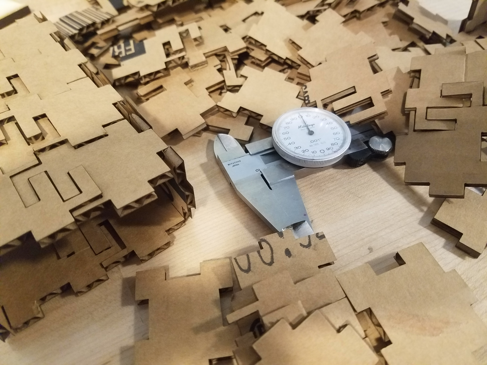
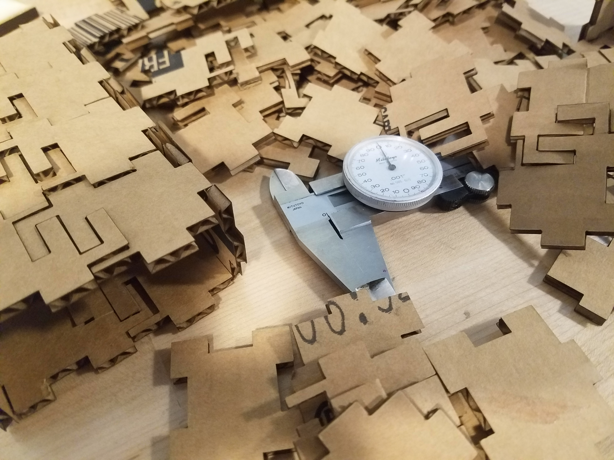
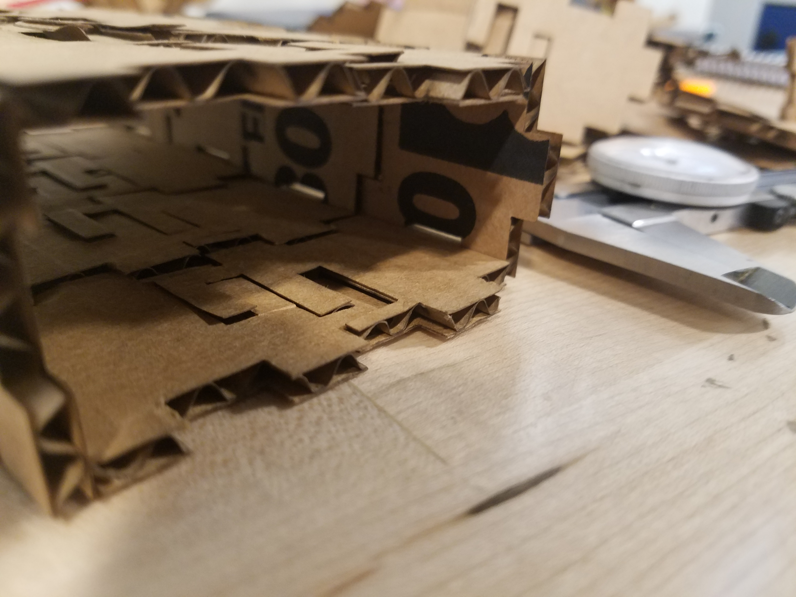
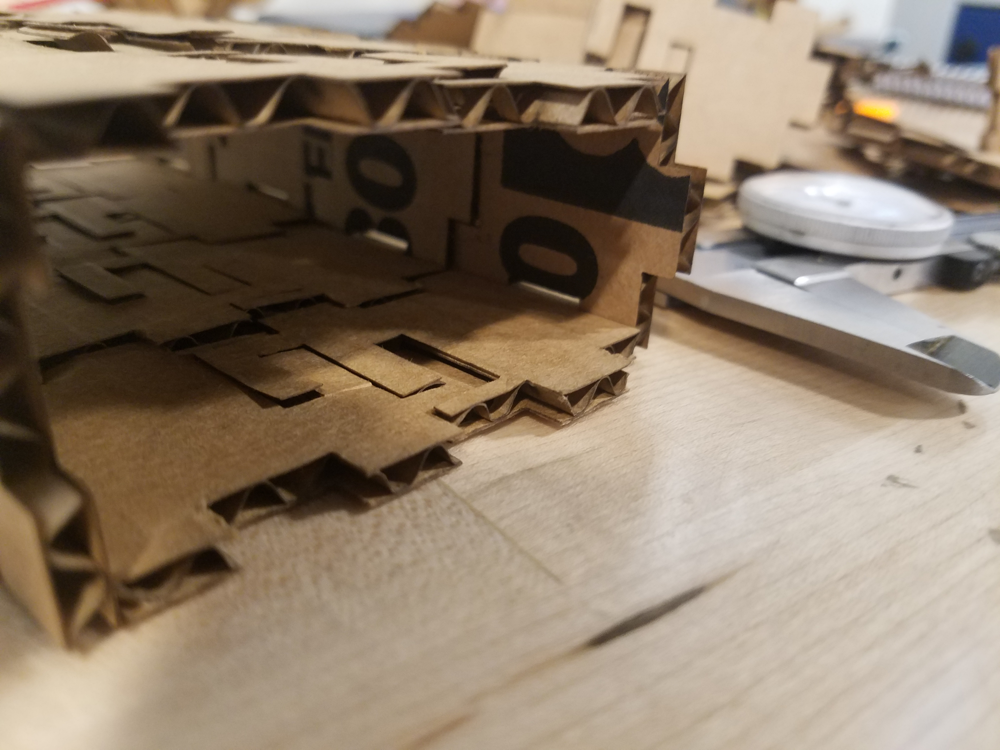
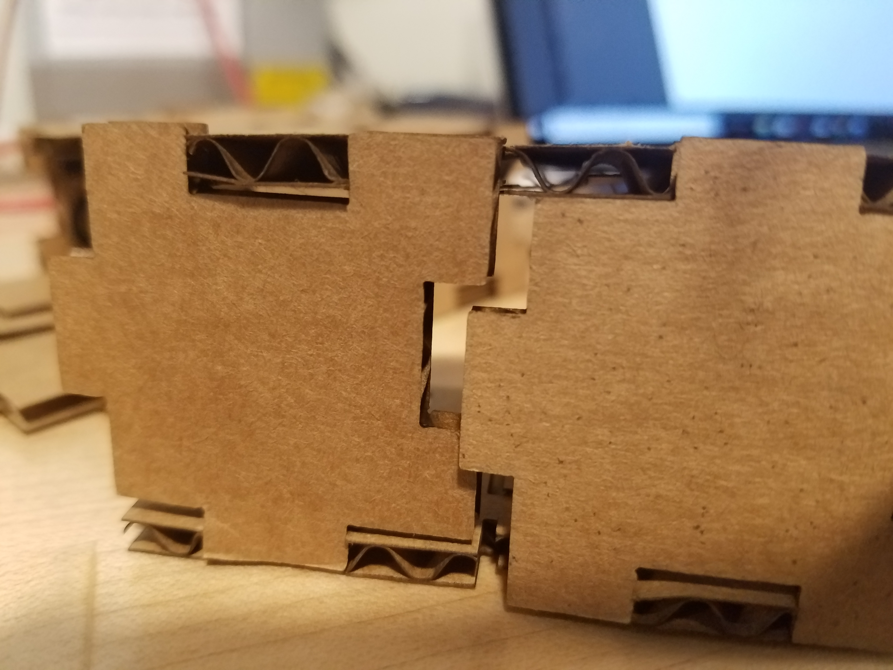
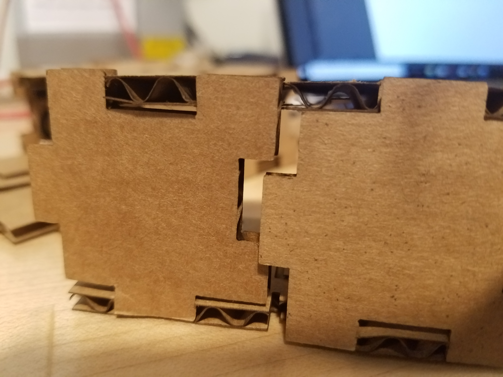

Lukas' Assignment 1: Press Fit Cardboard Construction Kit!
Overview:
 

Synthesis / Define
I decided to approach the problem by sketching out ideas based around two criteria.Ideation / Develop
In order to best to approach the problem, I sketched out solutions based around the criteria mentioned, as well as form, and function.
My ideas were further iterated upon while creating the vector graphics in Adobe Illustrator; considering scale, tolerance and clearance.
Test / Implementation / Deliver
Refining each of the three components and cutting out each of the pieces for a consistent Press Fit was a good learning experience in digital fabrication; more specifically along the engineering method of "Measure Twice, Cut Once"
 


Problem:
A fraction of an inch is cut off of each component which compounds into additional clearance between male and female elements thus offsetting the assembly part (as seen in the image below). 

Solution:
The issue was resolved by accounting for the amount of material being removed by the laser, reslting in tons of iterations and test prints to adjust for each of the three components accordingly.The Laser cuts off about .01" so in order to create a press fit; male ends must be +.01" inches bigger than the female ends which should be -.01" shorter.


Reflection
Further exploration could include researching the process to design the pieces to be more flush and compact with one another in the initial stages.
Another learning opportunity for future research would be to explore setting up vector anchor point to mirror one another such that making adjustments to the sketch adjusts the other sketches accordingly to keep the Press Fit intact.
Peer-attribution:
Tanya helped me understand how much the laser was cutting off (.01") which helped me better gauge my tolerances.
Machine Settings:

Source files
Click the image below to download the Vector Files